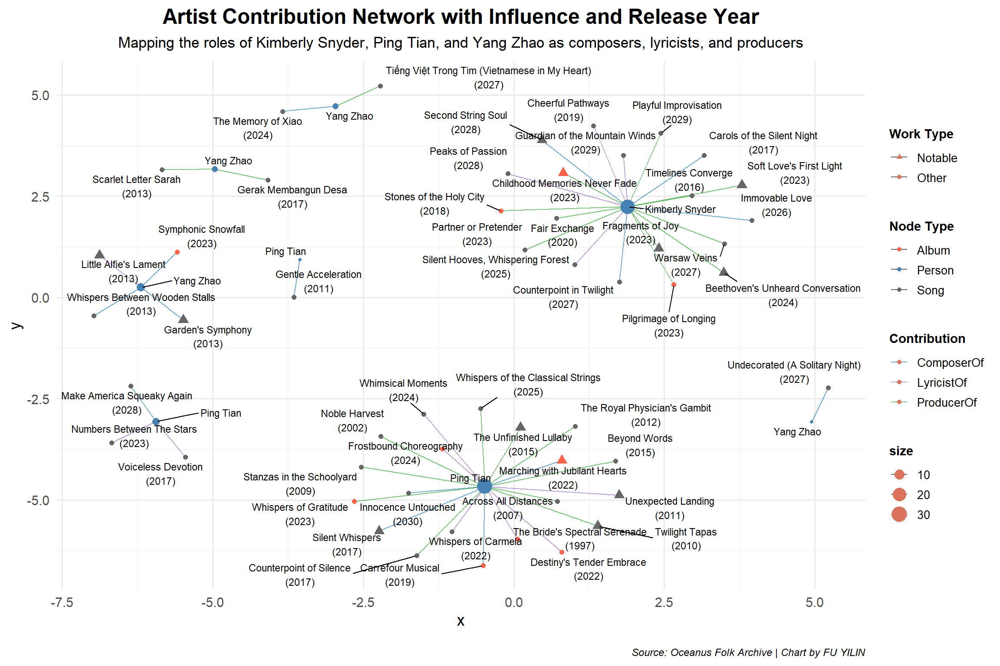

In this exercise, we will be exploring the Vast Challenge 2024 - Mini-Challenge 1
Introduction
Setting the scene
Sailor Shift is a global music icon who began her career on the island nation of Oceanus, rooted in the local genre of Oceanus Folk. From modest beginnings, she rose to international fame, initially performing with the all-female band Ivy Echoes (2023–2026), before achieving a solo breakthrough in 2028 with a viral single that topped global charts — an unprecedented milestone for Oceanus Folk.
Since then, Sailor has released highly successful albums almost annually, explored Indie Pop and Indie Folk, and collaborated widely. Despite branching out, she often returns to Oceanus Folk, playing a major role in expanding its influence globally. Her dual passion for spreading Oceanus Folk and uplifting lesser-known artists is reflected in her frequent collaborations.
Sailor’s fame has also brought attention to her former Ivy Echoes bandmates, together, they’ve helped elevate Oceanus Folk into a vibrant and respected genre, inspiring a new generation of Oceanus artists.
As Sailor returns home in 2040, journalist Silas Reed is preparing a retrospective piece, “Oceanus Folk: Then-and-Now”, and has compiled a large knowledge graph of artists, albums, songs, and relationships.
Key Tasks
In this Exercise, we will use the visualizations to develop a profile of what it means to be a rising star in the music industry.
Visualize the careers of three artists. Compare and contrast their rise in popularity and influence.
Using this characterization, give three predictions of who the next Oceanus Folk stars with be over the next five years.
Data Preparation
Load Packages
In the code chunk below, p_load() of pacman package is used to load the R packages into R environemnt.
In the code chunk below, fromJSON() of jsonlite package is used to import MC1_graph.json file into R and save the output object.
Show the code
kg <-fromJSON("data/MC1_graph.json")
Inspect Structure
In the code chunk below str() is used to reveal the structure of kg object.
Show the code
str(kg, max.level =1)
List of 5
$ directed : logi TRUE
$ multigraph: logi TRUE
$ graph :List of 2
$ nodes :'data.frame': 17412 obs. of 10 variables:
$ links :'data.frame': 37857 obs. of 4 variables:
Extracting the edges and nodes tables
Next, as_tibble() of tibble package package is used to extract the nodes and links tibble data frames from kg object into two separate tibble data frames called nodes_tbl and edges_tbl respectively.
Before we can go ahead to build the tidygraph object, it is important for us to ensures each id from the node list is mapped to the correct row number. This requirement can be achive by using the code chunk below.
Confirm the output object is indeed in tidygraph format by using the code chunk below.
Show the code
class(graph)
[1] "tbl_graph" "igraph"
Visualising the knowledge graph
In this section, we will use ggraph’s functions to visualise and analyse the graph object.
Several of the ggraph layouts involve randomisation. In order to ensure reproducibility, it is necessary to set the seed value before plotting by using the code chunk below.
Show the code
set.seed(1234)
Visualising the whole graph
In the code chunk below, ggraph functions are used to visualise the whole graph.
Warning: The `scale_name` argument of `discrete_scale()` is deprecated as of ggplot2
3.5.0.
Warning: ggrepel: 17411 unlabeled data points (too many overlaps). Consider
increasing max.overlaps
Notice that the whole graph is very messy and we can hardy discover any useful patterns. In order to gain meaningful visual discovery, it is always useful for us to looking into the details, for example by plotting sub-graphs.
The following analysis will be proving in the article below.
Oceanus Folk: Then-and-Now
By Silas Reed | Jun 1, 2040
üé∂ Chapter 1
Charting the Ascent
What Defines a Rising Star?
In the ever-shifting tides of the music industry, the phrase “rising star” is often tossed around—but what does it truly mean to earn that title?
To uncover the anatomy of a rising star, we turned to data: chart-topping hits marked as notable works served as the entry point. From there, we traced the artists responsible for these impactful songs and albums through PerformerOf connections in the creative network.
But rising stars aren’t defined by a single moment. For each artist in this cohort, we dug deeper—mapping every work they performed, whether it climbed the charts or not. The goal: to reveal a pattern of sustained output and influence. From these works, we extracted core attributes like release year, genre, and notoriety year (when a piece reached public acclaim), helping us track the arc of each artist’s rise.
Through this lens, a clear profile emerged. A true rising star is someone who:
Releases steadily, maintaining visibility with one or two new works every year.
Builds recognition across time, landing notable works not just once, but over multiple years.
Bridges experimentation and impact, often exploring diverse genres while resonating widely enough to reach the charts.
Constructing the Profile Criteria for Rising Stars
Characteristic Traits (Rising Star Profile)
Consistent Output: Releases at least 1–2 works per year to maintain active presence in the industry.
Influence Growth Across Years: Demonstrates sustained influence by having notable (charting) works across multiple years, not just a one-time breakout.
This ranking highlights the most promising music artists based on their volume of releases, consistency of activity, and multi-year chart presence. Kimberly Snyder, Yang Zhao, and Ping Tian top the list, showing strong momentum and diverse musical influence.
üé∂ Chapter 2
Charting the Soundscape
How Rising Stars Shape Their Popularity Across Genres
In the ever-evolving landscape of music, genre isn’t just a stylistic choice—it’s a signature. An analysis of the genre distribution among the top three rising stars—Kimberly Snyder, Ping Tian, and Yang Zhao—reveals sharply contrasting approaches to musical identity and audience engagement.
Show the code
ggthemr("dust") top3_artists <- artist_summary %>%slice_max(rising_star_score, n =3) %>%pull(artist_name)genre_distribution <- influence %>%filter(artist_name %in% top3_artists) %>%count(artist_name, genre)# Sort genre ordergenre_order <- genre_distribution %>%count(genre, sort =TRUE) %>%pull(genre)genre_distribution$genre <-factor(genre_distribution$genre, levels = genre_order)# Create color palette (18 genres max)genre_colors <-colorRampPalette(brewer.pal(8, "Dark2"))(length(genre_order))# Calculate total per artistgenre_totals <- genre_distribution %>%group_by(artist_name) %>%summarise(total =sum(n))# Plotggplot(genre_distribution, aes(x =reorder(artist_name, -n), y = n, fill = genre)) +geom_col(position ="stack", width =0.7) +geom_text(data = genre_totals, aes(x = artist_name, y = total +1, label = total),inherit.aes =FALSE, size =5) +scale_fill_manual(values = genre_colors, name ="Genre") +labs(title ="Genre Distribution of Notable Works by the Top 3 Rising Stars",subtitle ="Comparing the creative range of Kimberly Snyder, Yang Zhao, and Ping Tian",caption ="Source: Oceanus Folk Archive | Chart by FU YILIN",x =NULL,y ="Number of Notable Works" ) +theme(plot.title =element_text(face ="bold", size =16, hjust =0.5),plot.subtitle =element_text(size =12, hjust =0.5, margin =margin(b =8)),plot.title.position ="plot",plot.caption =element_text(size =9, face ="italic", hjust =1),legend.position ="bottom",legend.title =element_text(face ="bold"),legend.text =element_text(size =9) ) +guides(fill =guide_legend(nrow =3, byrow =TRUE))
Kimberly Snyder has carved out a niche rooted in Dream Pop, reinforcing a signature sound that leans into atmospheric melodies and introspective lyricism. Her body of notable works, while smaller in genre scope, speaks to focused artistic branding. With additional entries in Synthwave and Indie Rock, Snyder presents herself as a refined storyteller within a cohesive sonic world—one that appeals to a specific, loyal following drawn to dreamy soundscapes.
Yang Zhao, by contrast, showcases an emerging profile defined by adaptability. His notable works span a wider stylistic palette, from the earthy rhythms of Indie Folk to the brooding undercurrents of Doom Metal. This cross-genre presence suggests a rising artist who is as comfortable crafting intimate acoustic ballads as he is navigating experimental terrain. Zhao’s blend of raw emotionality and sonic risk-taking positions him as a boundary-pushing voice to watch.
Yet it is Ping Tian who stands out as the most prolific and genre-diverse of the trio. With the highest count of notable works among her peers, Tian’s creative output crosses the boundaries of Lo-Fi Electronica, Oceanus Folk, Avant-Garde Folk, and beyond. Her genre-spanning discography speaks to a bold and exploratory spirit, willing to disrupt musical norms while tapping into underground currents. This genre fluidity not only amplifies her reach but also marks her as a cultural chameleon—equally at home in experimental circles and broader listenerships.
Annual Output Trend of Top 3 Rising Stars
The annual output chart reveals distinct artistic trajectories for Kimberly Snyder, Ping Tian, and Yang Zhao.
Show the code
ggthemr("dust")# Step 1: Get top 3 artiststop3 <- artist_summary %>%slice_max(rising_star_score, n =3) %>%pull(artist_name)# Step 2: Prepare data with all years from first appearanceyearly_counts <- influence %>%filter(artist_name %in% top3) %>%count(artist_name, release_year) %>%complete( artist_name,release_year =seq(min(release_year, na.rm =TRUE), max(release_year, na.rm =TRUE)),fill =list(n =0) )# Step 3: Find peak years for labelspeaks <- yearly_counts %>%group_by(artist_name) %>%filter(n ==max(n)) %>%slice(1) %>%ungroup()# Step 4: Plotggplot(yearly_counts, aes(x = release_year, y = n, fill = artist_name)) +geom_col(position ="dodge", width =0.7) +geom_smooth(aes(color = artist_name, group = artist_name),method ="loess", se =FALSE, linewidth =1, linetype ="dashed" ) +geom_text(data = peaks,aes(x = release_year, y = n +0.5, label =paste0(n, " in ", release_year)),inherit.aes =FALSE,size =3.8,fontface ="bold",color ="black" ) +scale_fill_manual(values =c("Kimberly Snyder"="#D55E00","Ping Tian"="darkgrey","Yang Zhao"="#0072B2" )) +scale_color_manual(values =c("Kimberly Snyder"="#D55E00","Ping Tian"="darkgrey","Yang Zhao"="#0072B2" )) +scale_x_continuous(breaks =seq(min(yearly_counts$release_year, na.rm =TRUE),max(yearly_counts$release_year, na.rm =TRUE), 2)) +labs(title ="Annual Output of the Top 3 Rising Stars",subtitle ="Tracking the yearly creative output of Kimberly Snyder, Ping Tian, and Yang Zhao",caption ="Source: Oceanus Folk Archive | Visualization by FU YILIN",x ="Year Released",y ="Number of Works",fill ="Artist",color ="Trend Line" ) +theme(plot.title =element_text(face ="bold", size =18, hjust =0.5),plot.subtitle =element_text(size =13, hjust =0.5, margin =margin(b =10)),plot.caption =element_text(face ="italic", size =9, hjust =1),legend.position ="bottom",legend.title =element_text(face ="bold"),legend.text =element_text(size =10),axis.text.x =element_text(angle =45, hjust =1) ) +guides(fill =guide_legend(title.position ="top"),color =guide_legend(title.position ="top") )
`geom_smooth()` using formula = 'y ~ x'
Yang Zhao demonstrated an early surge in productivity, peaking with 6 works in 2013, followed by a gradual tapering in later years. In contrast, Ping Tian showed a steady and sustained rise beginning in the mid-2000s, reaching a modest peak of 2 works in 2009, and maintaining a consistent presence in subsequent years—suggesting long-term creative endurance. Kimberly Snyder emerged later but with strong momentum, hitting a peak of 5 works in 2023, indicating a more recent breakthrough and growing influence. The smoothed trend lines underscore these patterns: Yang Zhao’s curve shows early intensity and decline, Ping Tian’s trend is stable and gradual, while Kimberly Snyder’s trajectory is sharply upward—highlighting her as the most recent rising star.
Annual Output Reveals the Rhythms of Three Rising Stars
Show the code
ggthemr("dust")# Get top 3 artiststop3 <- artist_summary %>%slice_max(rising_star_score, n =3) %>%pull(artist_name)# Total annual outputtotal_output <- influence %>%filter(artist_name %in% top3) %>%count(artist_name, release_year, name ="total")# Notable works per yearnotable_output <- influence %>%filter(artist_name %in% top3, is_notable) %>%count(artist_name, release_year, name ="notable")# Merge into one tablecombined_output <-full_join(total_output, notable_output,by =c("artist_name", "release_year")) %>%replace_na(list(total =0, notable =0))# Plot: Bars = total, Dots = notableggplot(combined_output, aes(x = release_year, y = total)) +geom_col(fill ="#D55E00", width =0.7) +geom_point(data = combined_output %>%filter(notable >0),aes(x = release_year, y = notable),color ="black",size =2.5 ) +facet_wrap(~ artist_name, scales ="free_y") +labs(title ="Annual Output vs. Notable Works of Top 3 Rising Stars",subtitle ="Comparing release activity and charting success of Kimberly Snyder, Ping Tian, and Yang Zhao",caption ="Bars = Total works per year · Dots = Notable (Charting) works\nSource: Oceanus Folk Archive | Chart by FU YILIN",x ="Release Year",y ="Number of Works" ) +theme(plot.title =element_text(face ="bold", size =18, hjust =0.5),plot.subtitle =element_text(size =13, hjust =0.5, margin =margin(b =10)),plot.caption =element_text(size =9, face ="italic", hjust =1),axis.text.x =element_text(angle =45, hjust =1),strip.text =element_text(face ="bold", size =14),panel.grid.minor =element_blank() )

Yang Zhao entered the spotlight with explosive force. His productivity peaked as early as 2013, when he released an impressive six works with 2 notable works, marking the height of his creative burst. But this intensity proved difficult to sustain. After his initial breakout, Zhao’s yearly output gradually tapered, hinting at a front-loaded career that may now be entering a quieter, more selective phase.
In contrast, Ping Tian presents the portrait of a slow-burn success. Her creative engine began building momentum in the mid-2000s, with a modest but steady cadence that culminated in a peak year of 2009. While she never experienced the dramatic surges seen in her peers’ careers, Tian’s enduring annual contributions signal a stable and reliable presence in the industry—an artist whose relevance is built on consistency rather than spikes.
Kimberly Snyder, the newest entrant among the three, tells a different story—one of rapid ascent. Her presence was scarcely noted in earlier years, but by 2023, she had achieved a remarkable five notable releases, revealing a sharp upward trajectory. Her trend line surges steeply, signaling not only a recent breakthrough but the potential for continued acceleration.
When viewed side by side, the trio’s trend lines tell a larger story: Zhao blazed brightly and early, Tian has weathered the years with quiet persistence, and Snyder is in the midst of a promising rise. Together, they sketch out the many paths to musical influence—from early fire to sustained flame to late bloom.
üé∂ Chapter 3
Crafting the Soundscape
A Comparative Look at Three Rising Influencers in Music Production
In an era where artistic versatility is as valued as vocal performance, a detailed look at the contribution network of three standout artists—Kimberly Snyder, Ping Tian, and Yang Zhao—reveals contrasting yet compelling creative trajectories.
Kimberly Snyder emerges as the most prolific and critically acclaimed among the trio. Her dense web of connections across ComposerOf, ProducerOf, and LyricistOf roles speaks to both high output and strong creative control.
Ping Tian presents a different profile: measured, steady, and enduring. Her contributions span over three decades, beginning as early as Bride’s Spectral Serenade (1997) and extending to Innocence Untouched (2030). While her network isn’t as dense, it shows remarkable consistency across all three creative roles—indicating a balanced career that has weathered shifts in musical trends while maintaining relevance.
Yang Zhao, by contrast, represents the energy of an emerging voice. Though his contribution network is smaller, it is rapidly expanding, with most of his work materializing post-2013. His role is strongest in lyricism and composition, with recent entries like Symphonic Snowfall (2023) and Unadorned Silence (2027) signaling a sharp rise in influence. His trajectory points not to breadth, but to a focused creative ascent, making him a name to watch as the next influential force in the music landscape.
Together, these three artists illustrate distinct paths to impact—Snyder through saturation and acclaim, Tian through longevity and balance, and Zhao through a focused surge of relevance in recent years.
Mapping the Musical Influence of Three Visionary Artists
Zooming into broader influence to the music industry, the following visualized networks, built on referencing relationships such as DirectlySamples, CoverOf, LyricalReferenceTo, InterpolatesFrom, and InStyleOf, provide a nuanced lens into how creative DNA travels through time and genre.
Kimberly Snyder’s influence network is a dynamic hub of interconnectivity. Works like Beethoven’s Unheard Conversation (2024) and Echoes of a Global Generation (2023) serve as influential anchors, receiving numerous stylistic nods from other artists. Her music is not only frequently covered or sampled but often becomes the stylistic blueprint for future compositions. The presence of multiple notable hits (▲) and the centrality of her network nodes signal that Snyder is both a trendsetter and a continuous source of musical evolution. Her influence arcs outward and forward, with references extending as far as Farewell to the Fading Sun (2035), underscoring a legacy in the making.
Ping Tian
Show the code
build_artist_plot("Ping Tian")
Ping Tian, on the other hand, paints a portrait of quiet resonance and long-term relevance. Her influence network, though less clustered than Snyder’s, stretches across a remarkable timeline—from Bride’s Spectral Serenade (1997) to 2030’s Innocence Untouched. She inspires through lyrical motifs and emotional tone, with works like Lift Me Higher (2012) and Back Up Off Me (2019) frequently echoed via interpolations and references. Rather than dominating stylistic discourse, Tian infuses it—her music acting as connective tissue across decades of songwriting. Her contribution is subtle but foundational.
Yang Zhao
Show the code
build_artist_plot("Yang Zhao")
Warning: There was 1 warning in `filter()`.
ℹ In argument: `source == artist_id`.
Caused by warning in `source == artist_id`:
! longer object length is not a multiple of shorter object length
Meanwhile, Yang Zhao’s influence is precise and potent. At the heart of his network is Little Alfie’s Lament (2013)—a standout hit that catalyzes a wave of inspired works. His referencing graph, though less sprawling, is rich in directional influence. Songs like Eva’s Revolutionary Stride (2030) and After the Last Tear Falls (2020) point to Zhao’s growing impact in recent years. The graph’s temporal reach, spanning from early 2000s references to futuristic echoes in the 2030s, positions him as an emerging artist whose emotional narrative and stylistic clarity are shaping the next generation.
üé∂ Chapter 4
Rising Waves in Oceanus Folk
Who Will Shape the Genre Next?
As Oceanus Folk continues to captivate audiences with its emotive melodies and coastal rhythms, a new generation of talent is beginning to emerge. Our team has applied a multi-layered algorithm to predict the next big names likely to rise to stardom in the genre over the next five years.
Data-Driven Discovery
The predictive model focuses exclusively on artists who have released Oceanus Folk works since 2030, eliminating outliers like long-established superstar Sailor Shift to surface new potential. The analysis considers several key metrics:
Total output: How many works the artist has produced since 2030.
Chart impact: A double-weighted score for works that have appeared on notoriety charts.
Career momentum: The year of their first release and first notable appearance help determine their early trajectory.
Multi-role versatility: Artists who serve not just as performers but also as producers, composers, or lyricists receive bonus credit for creative range.
Each artist is assigned a “potential score” combining these elements. This blended measure allows the model to highlight artists not only making waves today but building the foundation for sustained impact.
Their profiles suggest not just short-term success, but long-term influence. These rising voices are poised to define what Oceanus Folk will sound like in the years to come.
Show the code
# Step 1: Get top 3 artist namestop3_names <- next_stars$artist_name# Step 2: Get performer edges for top 3artist_song_edges <- edges_tbl %>%filter(`Edge Type`=="PerformerOf") %>%semi_join(nodes_tbl %>%filter(name %in% top3_names), by =c("source"="id")) %>%select(artist_id = source, song_id = target)# Step 3: Extract nodesartist_nodes <- nodes_tbl %>%filter(name %in% top3_names) %>%mutate(label = name, type ="Artist")song_nodes <- nodes_tbl %>%filter(id %in% artist_song_edges$song_id) %>%mutate(label = name, type ="Song")# Step 4: Combine and re-index nodesall_nodes <-bind_rows(artist_nodes, song_nodes) %>%mutate(graph_id =row_number())# Step 5: Map original IDs to graph IDsnode_map <- all_nodes %>%select(id, graph_id)edges_mapped <- artist_song_edges %>%left_join(node_map, by =c("artist_id"="id")) %>%rename(from_id = graph_id) %>%left_join(node_map, by =c("song_id"="id")) %>%rename(to_id = graph_id) %>%select(from = from_id, to = to_id)# Step 6: Create graph and plotsong_graph <-tbl_graph(nodes = all_nodes, edges = edges_mapped, directed =FALSE)ggraph(song_graph, layout ="fr") +geom_edge_link(color ="gray80", alpha =0.6) +geom_node_point(aes(color = type, shape = type, size = type)) +geom_node_text(aes(label = label), repel =TRUE, size =3.2) +scale_color_manual(values =c("Artist"="#D55E00", "Song"="steelblue")) +scale_shape_manual(values =c("Artist"=17, "Song"=16)) +scale_size_manual(values =c("Artist"=6, "Song"=3)) +labs(title ="Top 3 Rising Stars and Their Performed Works",subtitle ="Network visualization of artist-song relationships",caption ="Source: Oceanus Folk Archive | Chart by FU YILIN" ) +theme_void() +theme(plot.title =element_text(face ="bold", size =16, hjust =0.5),plot.subtitle =element_text(size =11, hjust =0.5),legend.position ="bottom" )
In a striking detail from the network graph, two songs — Tide-Worn Tales and The Sunken Compass — appear anchored at the center of the visual, bridging multiple artist clusters. This suggests that both pieces were performed by more than one rising star, serving as collaborative or cross-influenced works in the Oceanus Folk scene.